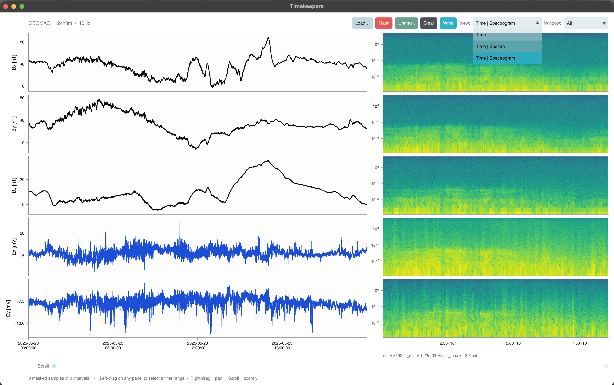

TKApp Explorer
TKApp is the interactive half of Timekeepers: a native GLMakie window for scrolling through a long record, marking bad intervals by eye, and writing the result back out in the format it came from.

Opening the window
run_tkapp builds the app and blocks until the window closes, then returns the TKApp so the mask you made survives the session:
using Timekeepers
run_tkapp() # start empty, load from the toolbar
run_tkapp("data/LEMI090.txt") # open one file
run_tkapp("data/RK137") # open a whole site directory
app = run_tkapp(load_lemi424("data/LEMI090.txt")) # open an in-memory TimeArrayTo build the app without blocking — for scripting, or to inspect it before showing it — construct a TKApp and display it:
app = TKApp("data/LEMI090.txt")
display(app)A bundled launcher is available from a repository clone:
julia --project=. examples/tkapp.jlGLMakie requires a desktop session with OpenGL 3.3 or newer. See Getting Started for a one-line smoke test. Everything outside the app works headless.
The toolbar
| Control | What it does |
|---|---|
| Load Run… | Open one file — .txt, .dat, .lem or .xyz |
| Load Site… | Open a directory: every run in it is read, ordered by start time and concatenated, with NaN filling the gaps between runs |
| Mask | Mark the current selection bad |
| Unmask | Mark the current selection good again |
| Clear | Drop every mask on the record |
| Write | Export the cleaned data and the mask (see below) |
| View | Time, Time | Spectra, or Time | Spectrogram |
| Window | Visible span: 1 minute through 7 days, or All |
Below the plots, Scroll moves the visible window through the record — drag the slider, or step a window at a time with < and >.
The status line at the bottom reports what was loaded, what was written, and any error, so a failed load or write does not disappear into the REPL.
Selecting and masking
Within a time-series panel:
- left-drag — select a time interval; the span highlights across every channel at once
- right-click — mask the current selection, the same as pressing Mask
- right-drag — pan
- scroll — zoom the y axis
Masked spans render as shaded bands, and the samples inside them are drawn in grey rather than the channel colour, so you can always see what you cut and undo it with Unmask.
Selecting across the full window and pressing Mask is the fast way to discard a whole bad day; narrowing the Window to a minute is the way to cut a single spike cleanly.
Writing results
Write picks its behaviour from the source format.
For LEMI-424, GEOMAG and .xyz records it writes two files next to the source, named after it:
<name>_clean.<ext>— the cleaned record in the original format<name>_mask.csv— the masked intervals, replayable withread_mask
Loading a site directory writes <site>_combined_clean.<ext> and <site>_combined_mask.csv inside that directory.
For Metronix sites, blanking is not an option — the format has no NaN, and downstream tools expect continuous runs. Instead the app calls write_metronix_site_masked, which amputates the masked intervals and writes the surviving stretches as separate meas_* directories under <site>.W, with a README.md recording each write session. A progress console opens while this runs. See Metronix Sites.
Continuing in code
Every masking accessor takes the app directly, so a session done by hand continues in the REPL without unpacking anything:
app = run_tkapp("data/LEMI090.txt") # mask a few intervals, then close the window
app.data # the loaded TimeArray
app.mask # the TimekeeperMask
masked_samples(app.mask)
cleaned = cleaned_timearray(app) # NaN in masked rows
segments = good_segments(app; min_samples = 256)
weights = sample_weights(app)
write_cleaned("out/clean.csv", app)
write_mask("out/mask.csv", app)See Masking & Cleaning for what each of those produces.